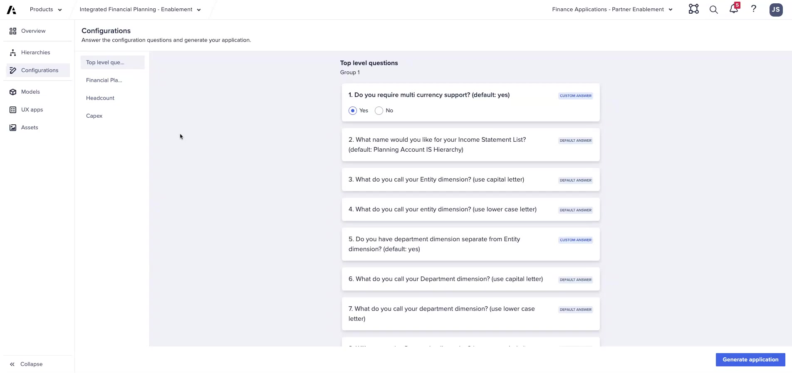
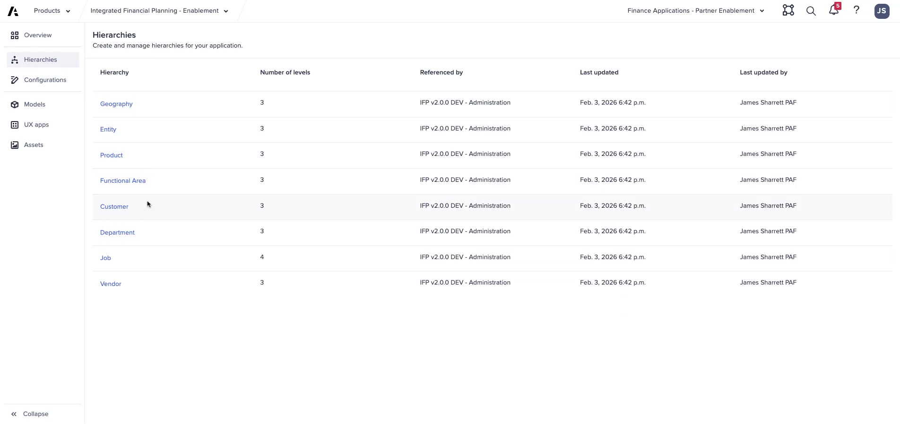
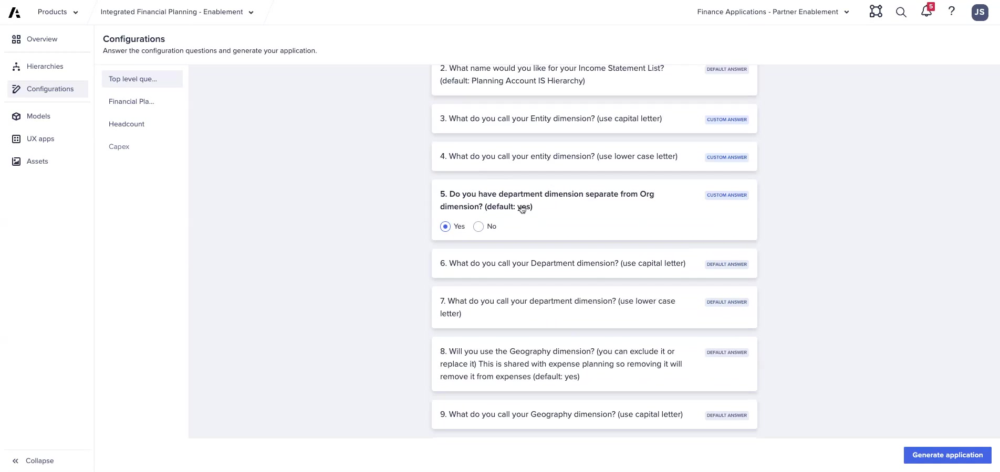

Lab A: Configure FictoCorp
Hands-on: configure and generate IFP for FictoCorp Phase 1 (Revenue/COGS + OpEx + HC)
Module 2Lab45–60 min
ℹ Lab Scope
Phase 1 deploys Revenue/COGS + OpEx + Headcount only. No CapEx model, no Balance Sheet. Lab B will extend to the full 3-statement scope.
Requirements Brief — FictoCorp Phase 1
| Requirement | Your Configuration Choice |
|---|---|
| Entity name | Entity — 2 levels |
| Department | Yes — Department — 3 levels |
| Geography | No |
| Functional Area | No |
| Vendor | No |
| Headcount approach | Option A: IFP Role-Based HC Model |
| Multi-currency | Yes (USD base) |
| Balance Sheet | No |
| Cash Flow | No |
| CapEx approach | Option B — GL level (delete CE after generation) |
| Margin planning | In FP only |
| Product dimension | Yes — Product — 2 levels |
| Customer dimension | Yes — Customer — 2 levels |
| IS list name | Planning Account IS Hierarchy (default) |
| Expense planning | Yes — Entity + Department dimensionality |
| Expense allocations | No |
Lab Steps
- Open the Application Framework — navigate to the configurator in your IFP workspace
- Answer Top-Level questions — use the requirements table above; pay close attention to naming
- Open Hierarchy Configuration — set Entity to 2 levels, Department to 3 levels; rename both to match your question responses exactly
- Answer FP model questions — margin in FP, Product (2 levels), Customer (2 levels), expense with Entity + Department dimensionality, no allocations
- Answer HC model questions — multi-currency: Yes, IS list name: default, Department: Yes, Job term: Job
- Generate — click Generate and monitor the logs
- Review generation logs — identify any errors; note items that failed to generate
- Delete the CE model — since we chose GL-level CapEx, the generated CE model is not needed



Debrief Questions
- What happens if the Entity name in the configuration question doesn't match the name in the Hierarchy Configuration screen?
- Why did we choose Option A for Headcount but Option B for CapEx?
- If FictoCorp later decides to add a Geography dimension, what would be the impact?
- What is the minimum number of hierarchy levels? Maximum?
- Why does the Application Framework generate a CE model even when we selected GL-level CapEx?
💡 Generation Failures
If generation fails: (1) confirm you have all 4 required roles, (2) confirm you are generating in your default tenant, (3) check PAF configuration logs to see where failures occurred.